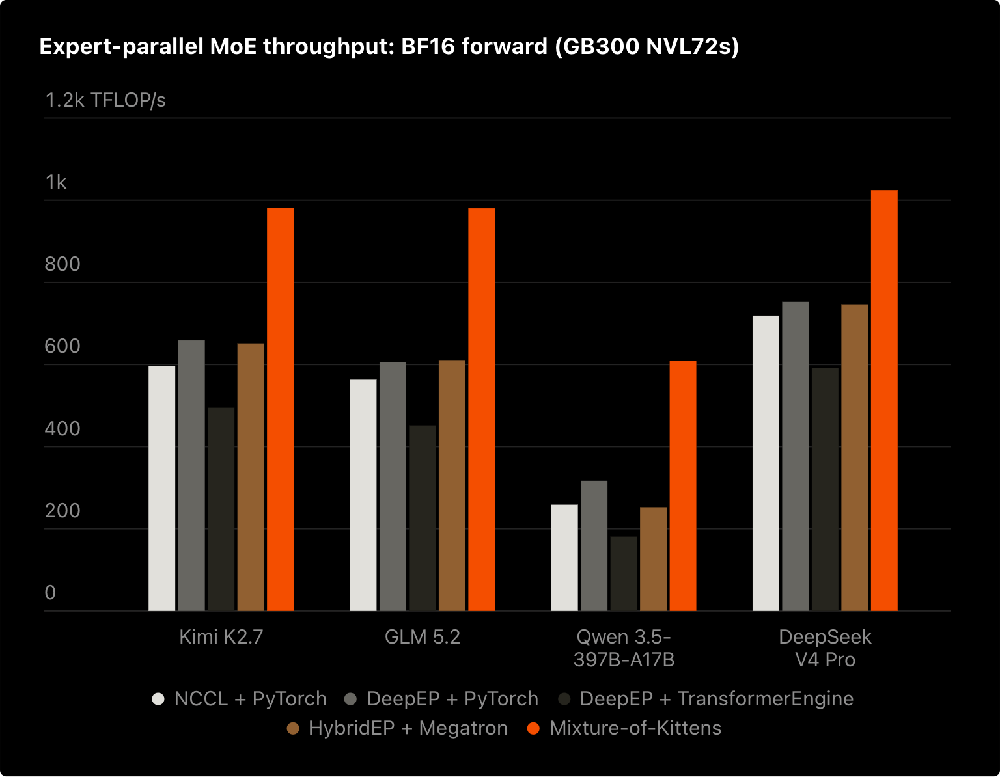
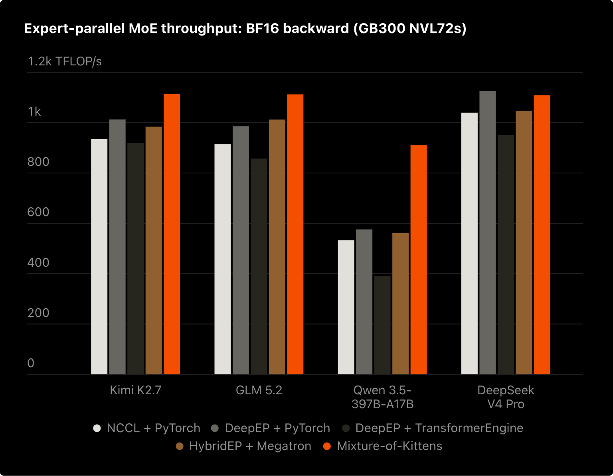
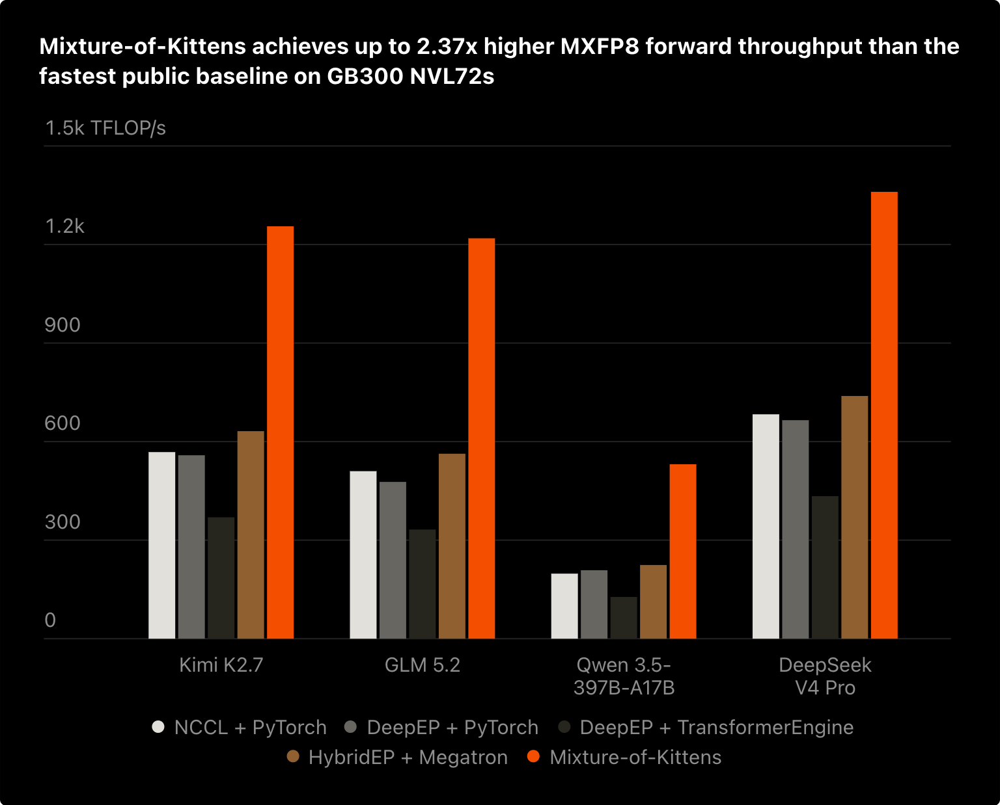
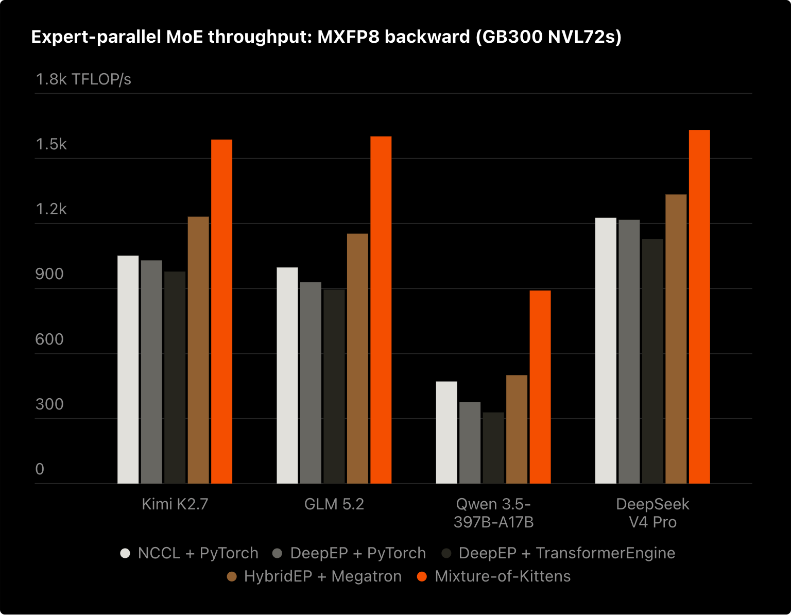

Dist-MoE
Speed-of-light distributed
Mixture-of-Experts kernels.
Dist-MoE runs routed expert MLPs across GPUs. Its kernels overlap peer transfers with matrix multiplication, while its planner packs saved activations into a fixed budget and recomputes them when space runs short.
MoE Overview
A router selects a few experts per token and combines their weighted outputs.
A Mixture-of-Experts (MoE) layer contains several expert MLPs. A router selects a few for each token and assigns their scores. Only those experts run; their weighted outputs form one output row.
Token Routing and Expert Combine
The caller supplies expert IDs and scores; selected expert outputs form one weighted output row.
Expert parallelism (EP) places experts on GPU ranks; this guide uses one GPU per rank. A remote expert reads a token from its owner and returns the result there. Training retains the forward values needed by backward.
Notation: T input tokens per GPU, D token width, F expert intermediate width, K experts selected per token, E global experts, and EP GPUs in the expert-parallel group. R is the routed-row count received by the current GPU.
The MXFP8 Mega path connects token-owner buffers to fused expert operations. One forward op gathers x, computes W13, SwiGLU, and W2, and returns h3 routes. Backward uses two fused expert ops, W2 then W13, followed by input-gradient reduction.
Reading the overview. Each GPU is both a token owner and an expert owner. HBM is GPU memory; symmetric dispatch and combine buffers are peer-addressable HBM connected by NVLink. The view below follows peer traffic into one expert GPU.
Dist-MoE: High-level End-to-End Execution
Eight op-level steps connect peer buffers, fused MXFP8 expert computation, and forward/backward reductions.
dist_blockscaled_grouped_gemm_ prefix. Setup and conditional replay group related operations into one step. Forward ↗ · Backward ↗Related Work: Open Source MoE Kernels
Dist-MoE packs activations across layers during CUDA graph replay; this capability is absent from the reviewed alternatives.
A reusable context owns peer buffers and an activation buffer. Its slots retain values until backward; scratch holds temporary values reused between calls. Layers pack eligible saved state into a slot. If the budget is exhausted, the planner keeps the input and rebuilds the remaining state in backward, including during CUDA graph replay.
OSS Capability Comparison
Compare CUDA graphs, activation packing, recompute, and fused expert execution in the reviewed public APIs.
| Capability | Dist-MoEMeta | MoKCursor | Comet / FluxByteDance | Mega MoEDeepSeek |
|---|---|---|---|---|
| CUDA graph execution | Yes | Yes | Noreviewed dynamic-routing path | Yes |
| Saved-state packing across layers into a bounded buffer | Yes | No builtin planner | No builtin planner | No training-state planner |
| Dynamic recompute | Yeslayer-budget decisions | Yesmacrobatch replay1 | No builtin policy | No fused training backward |
| Fused comm-compute | Yes | Yes | Yes | Yes |
| Forward and backward kernels | YesBF16 / MXFP8 | YesBF16 / MXFP8 | Yestraining primitives2 | Fused forward only |
| Runs without a shared-expert branch | Yes | Nocurrent API requires shared weights | Yes | Yesshared experts optional |
1 MoK replays macrobatches beyond retained capacity and supports manual checkpointing. Dist-MoE uses a shared layer budget.
2 Comet provides training primitives. Framework integration coordinates backward.
Reviewed snapshots and source evidence
- Dist-MoE · 60ce816: Supported modes, activation budget and recompute, training CUDA graph test, and routed-expert-only API.
- MoK · f3a8bd2: Required shared-expert weights, saved versus replayed macrobatches, manual checkpointing, and compiler tracing test.
- Comet / Flux · 19831ca: Routing-dependent host copies and stream synchronization, backward use of gather/reduce-scatter, grouped weight gradients, and routed-only example.
- Mega MoE / DeepGEMM · 1fc9c66: Fused forward APIs with optional shared weights and benchmark calls. DeepGEMM separately provides weight-gradient GEMMs.
MoK’s reviewed API requires a shared-expert branch; Dist-MoE supports routed-only execution. To compare the same work, the measurements below include one BF16 shared expert alongside six routed experts in both implementations.
MoK vs Dist-MoE: Measured Performance
Dist-MoE reaches 1.40× speedup over MoK in the imbalanced ten-layer packing workload.
Why MoK is our baseline: Cursor’s published results
MoK leads BF16/MXFP8 forward and MXFP8 backward across all four published model shapes, making it a strong OSS training baseline. BF16 backward has one exception: DeepEP + PyTorch is slightly ahead on DeepSeek-V4-Pro.
MoK: SoTA OSS baseline
Strong published NVL72 training results motivate our baseline choice.

BF16 · Backward
MXFP8 · Forward
MXFP8 · Backward
Results picked from Cursor’s Mixture-of-Kittens blog · cursor.com/blog/mixture-of-kittens ↗ · MoK paper, §4.1 / Fig. 7 ↗.
GB300 · CUDA 13.0 · 2,048 input tokens per GPU · D = 7,168 · 384 experts · top-6 + one BF16 shared expert. Both implementations use CUDA graphs.
Iteration time covers forward in inference and forward + backward in training. The packing workload runs ten layer forwards followed by their backwards. Speedup over MoK = MoK iteration time ÷ Dist-MoE iteration time. A 1.22× speedup means MoK takes 1.22 times as long.
Read the rates alongside time. Useful TFLOP/s counts the GEMM work completed per GPU, excluding padding and replay. HBM model is logical bytes divided by iteration time. NVLink TX/RX is measured separately using NVML GPM and averaged across GPUs. Higher NVLink byte rates alone do not establish better performance.
Imbalance Profiles and Saved-State Budgets
A GPU can be lightly loaded in one layer and heavily loaded in the next. Dist-MoE shares saved-state capacity across those layers; MoK reserves a separate budget for each.
Per-Layer Budgets and Shared Activation Packing
MoK reserves separate layer budgets; Dist-MoE packs unequal layer demands into one shared slot.
Multi-Layer Training Performance
The packing workload reaches 1.40× speedup; the columns show iteration time and the tables retain raw rates and allocation.
Exact iteration times · all measured EPs
Routing Imbalance
Balanced routing gives each GPU R = TK rows on average. An imbalance factor of 8 gives the tracked GPU eight times that load while the others divide the remaining rows. Each column pair compares the same workload.
Performance Under Routing Imbalance
Compare matched BF16 and MXFP8 workloads at 1×, 4×, and 8× imbalance.
Exact iteration times · all measured EPs
Expert Width and Compute per Byte
Increasing F adds expert compute while keeping the input/output payload fixed. Dist-MoE has a shorter iteration time in all twelve measured width settings.
Expert Width and Compute per Routed Byte
Increasing F adds expert work without enlarging routed input/output rows; compare time and useful throughput.
Exact iteration times · all measured EPs
Measurement definitions and source data
Iteration times are medians of five 30-iteration timing windows, reduced across GPUs using the slowest GPU. Inference includes forward; training includes forward and backward. Both implementations include one BF16 shared expert. Weight preparation is outside timing.
The columns and metrics use the faster valid Dist-MoE pipeline for each measured case. Every pipeline is included in the downloadable data. The ten-layer workloads use independent inputs and weights, with all forwards issued before reverse-order backward.
MoK’s requested activation factor 2.5 rounds to about 2.67 under its native per-layer allocation policy. Dist-MoE uses one shared slot at factor 2.5, with zero capacity-induced recompute flags in every packing case. These factors describe different policies and do not imply equal byte budgets. The experiment does not isolate how much of the speedup comes solely from avoided recompute.
Total allocated GPU memory includes weights, scratch, and graph state. In EP64 MXFP8 packing, it peaks at 49.73 GiB for Dist-MoE and 48.37 GiB for MoK. Saved-state capacity flexibility and total allocation are reported separately.
All timings and metrics · CSV ↓All Dist-MoE pipeline comparisons · CSV ↓Measurements and saved-state evidence · JSON ↓Measurement definitions ↗
We have seen the measured benefit. Next, follow the route pointers, derive the memory budget, and inspect the tile handoffs that implement it.
01 Routing Metadata and Symmetric Memory
Peer buffer bases and route indices determine where each expert reads a token and returns its result.
The running example uses two GPU ranks. Rank 0 owns E0/E1 and starts with A/B; rank 1 owns E2/E3 and starts with C/D. Every token selects two experts. The caller supplies the IDs and scores.
Here T = 2, K = 2, D = F = 256, and balanced R = TK = 4. Figure 01 adds the routing metadata and byte addresses behind the overview’s transfers.
Routing Metadata and Symmetric Buffers
Expert IDs and peer-base tables map each route to its gather address and return slot.
Peer Buffer Mapping
Context creation allocates routing, dispatch, and combine buffers in symmetric HBM and exchanges their peer bases. Each rank keeps GPU int64 arrays of their peer bases. These virtual addresses let a kernel read or write another GPU’s physical HBM.
copy_routing_and_dispatch() writes an int32 token count into the 128-byte routing header, followed by int16 [T,K] expert IDs. It copies x[T,D] once into dispatch and leaves scores local. Dispatch has [T_max,K,D] capacity because backward needs a separate gradient row for each route.
Routing Metadata Exchange and Pointer Construction
After the publication barrier, GPU kernels read every rank’s IDs, check matching physical T, count local expert rows, and build their expert-major pointer order. IDs are gathered into local [EP,T,K] HBM. Counts and pointers remain on the GPU.
| Locally constructed table | Peer address | Consumer |
|---|---|---|
fwd_gather_ptrs | dispatch_base[r] + t × σ | Expert kernel reads the original source row |
scatter_ptrs | combine_base[r] + (t × K + k) × σ | W2 epilogue writes the result to its return slot |
bwd_gather_ptrs | dispatch_base[r] + (t × K + k) × σ | W13 returns route input gradients; the owner reduces K rows |
For E0(C), the source pointer is rank 1’s dispatch base + 0 B. The result pointer is its combine base + 512 B: C’s original k1 slot. Both addresses are built locally from the peer base and route indices.
Padding, decode, and backward routing
Block-scaled execution pads each expert to its required row multiple. Initialized padding pointers are zero: gathers produce zero rows and scatters skip them. Small-decode kernels fuse the metadata passes. Inference omits backward pointers. Training retains routing state; combine carries route output gradients for W2 DGRAD, and dispatch receives route input gradients for owner-side reduction.
Expert Gather, Scatter, and Combine
The expert kernel gathers rows through the source pointers, runs W13/SwiGLU/W2, and scatters BF16 results through the paired return pointers. After a combine barrier, the owner applies its scores and sums the K routes in FP32.
Inputs, shapes, and inactive routes
| Caller value | Shape | Contract |
|---|---|---|
| Input x / output | [T, D] | Local physical token rows |
| Expert IDs / scores | [T, K] | K route slots per token |
| W13 | [E_local, 2, F, D] | BF16 gate/up weights |
| W2 | [E_local, D, F] | BF16 down-projection weights |
Global E = E_local × EP. BF16 inputs and weights are contiguous CUDA tensors. ID −1 disables a route and requires score zero. An all-inactive physical row returns exact zero. Every rank uses the same physical T for a call, including padding.
Routing now tells us where a row is read and where its result returns. Next, look inside the expert MLP.
02 Expert Computation and Tensor Precision
Follow the expert math and stored formats; MXFP8 weight gradients require a different quantization axis.
W13 concatenates the gate and up projections into h1, of width 2F. SwiGLU forms h2, of width F; W2 maps it back to h3, of width D. The equation below fixes the notation used by later memory and kernel figures.
h1 = W13 x = [g; u] → h2 = SiLU(g) ⊙ u → h3 = W2 h2
g and u are the gate and up projections. SiLU(z) = z × sigmoid(z); ⊙ is elementwise multiplication.BF16 uses two bytes per value. E4M3 has four exponent bits and three fraction bits; its maximum finite magnitude is 448. E8M0 encodes a power-of-two scale in one byte. E2M1 fits a sign, two exponent bits, and one fraction bit into four bits.
MXFP8 stores quantized values (qdata) in E4M3, with one E8M0 scale per 32 logical values. The shared scale controls the rounding of every value in that block. NVFP4 packs two E2M1 values per byte and uses E4M3 block scales plus global scales. A producer chooses the scale, rounds the values, and publishes data and scales together. Add the outlier below to see how a shared scale can make a small value underflow.
Block-Scaled Quantization
Inspect qdata, shared scales, rounding, and the formats of forward and backward intermediates.
Intermediate Tensor Formats
Operand precision, accumulation precision, and stored precision have different roles. Tensor cores accumulate in FP32; the table identifies each stored format. The prefix grad_ names a gradient: grad_h1 is the gradient of h1. DGRAD computes input gradients; WGRAD computes expert-weight gradients. This table is the article’s precision reference.
Quantization Axes for Forward and Backward
Forward propagation (FPROP) contracts over features, so each activation row has scales along that axis. Weight gradients (WGRAD) contract over token rows and need a separately quantized column-oriented bundle. Static MXFP8 weights use grouped 32 × 32 quantization: forward and input-gradient GEMMs can share qdata, with distinct scale orientations.
MXFP8 training publishes BF16 source rows and quantizes after peer gather. NVFP4 inference quantizes and packs on the source rank, so the peer reads packed data, block scales, and the row inverse global scale directly. BF16 route outputs return through the same combine protocol.
Qdata, scales, dense intermediates, and padding all consume memory. We can now derive a context budget from these representations and their shapes.
03 Memory Planning and Virtual Addressing
Layer tensor costs determine saved slots, shared device scratch, and optional host overflow backing.
The activation buffer contains saved-state slots and one shared scratch region. Slots keep values until backward; scratch is reused between sequential calls. Here T is the configured maximum input rows per rank. A call may use fewer rows, with the same physical T on every EP rank.
Count one layer’s bytes from its tensor shapes, using align128(elements × 2) for BF16. Saved state accumulates across layers in a slot. Scratch reserves the largest temporary layout needed by one call, including recompute; it is shared rather than multiplied by the layer count.
For BF16, forward scratch with eligible state omitted contains x_gathered, h1, and h2: 2R(D + 3F) bytes before alignment. When D ≤ F, the backward recompute peak is 2R(D + 5F). It adds gradient storage; grad_h1 reuses the space occupied by h2 and gathered grad_h3 after both have been read.
If D > F, gathered grad_h3 needs an extra region. MXFP8 adds row/column qdata and scale bundles, with per-expert row padding. Figure 03 uses the same receive-row bound for its forward and backward comparisons.
Layer Costs, Memory Budgets, and VMM
Derive live tensor bytes, then choose saved-state capacity and device or host scratch backing.
Model dimensions and scratch limits
K = 8, E = 128, EP = 16. Total scratch covers the device factor and is bounded by the routing topology. These controls model ordinary training without optional postprocessing or native backward specializations.
Per-Layer Tensor Costs
Exact tensor-by-tensor calculations
VMM maps one contiguous GPU virtual range onto device-backed activation slots, pinned-host overflow scratch, and a hot device scratch suffix. Scratch grows down from the high end. Pages are mapped at context creation and stay in their assigned tier during execution. Symmetric communication buffers remain separate HBM allocations.
Allocation and VMM Backing
Scratch factors bound the routed rows that can execute. The activation-slot factor scales optional balanced saved-state bytes above the mandatory-input minimum. An exact-byte cap selects the same saved-state budget directly.
Expect moderate routing skew and reserve more space for saved state. Activation factor 1.5 and device scratch factor 4 keep this example entirely in HBM.
Reduce the activation factor to 0.5; keep device scratch factor 4 and use VMM total scratch factor 16 for a larger receive bound. Scratch beyond the hot HBM tier is backed by pinned host pages in the same virtual range; layers replay when saved state does not fit.
Set one explicit activation budget per slot. Actual routed rows still determine each layer's save or replay decision; device scratch factor 16 keeps this example entirely in HBM.
Activation Slot Capacity
The strip shows each region’s share of the current combined allocation. Exact bytes appear in the totals. Changing slot capacity changes saved-state space; it does not resize either scratch reservation.
align128(n) = ceil(n / 128) × 128. The useful maximum retains eligible state at the total executable receive bound. Larger typed API budgets are permitted but cannot retain additional state. These logical bytes exclude caller tensors, weights/gradients, symmetric communication, CUDA mapping granularity, and allocator padding. Memory guide · VMM · API policiesThe minimum slot keeps every layer’s input available for replay. Factor 1 covers balanced full-save; the useful maximum covers eligible state at the total executable receive bound.
An allocation sets capacity. The device planner then chooses which forward values to keep. Next, pack successive layers into a slot and watch its recompute decisions, then inspect the individual values’ consumers and offsets.
04 Activation Packing and Dynamic Recompute
Multiple MoE layers share one activation slot; the device planner saves state or retains inputs for replay.
One activation slot can hold saved values from several MoE layers. Each forward appends views at the slot’s cursor; temporary operands use shared scratch. max_moe_layers_per_activation_slot bounds the number of layers in that stack.
Planner Byte Offsets
A planner offset is an int64 byte displacement from the activation buffer base: address = base + offset. buffer_offsets[slot] tracks that slot’s next free byte; buffer_offsets[N] is the scratch end. A forward saves its offsets and physical slot ID for the matching backward. Offset zero is valid.
Save and Recompute Decisions
Before saving a layer’s full state, the planner checks cumulative bytes on every EP rank and reserves inputs for the remaining layers. It tests the worst rank, so every rank makes the same save/recompute choice despite different received-row counts.
maxᵣ(saved_bytesᵣ + full_state_bytesᵣ)
+ remaining_layers × saved_input_bytes > slot_capacity
Layer Packing and Dynamic Recompute
Watch layers append saved views, reserve future replay inputs, and rewind their offsets in backward.
Inspect each layer’s saved offsets and rank totals
Allocation timing and backward scratch reuse
The packing view is byte-proportional; the arena overview is schematic. The decision view tests a hypothetical full-state allocation. Backward planning rewinds the cursor before kernels run; bytes become reusable after its readers finish. In the top scratch interval, h2 and gathered grad_h3 are disjoint views; grad_h1 reuses their space after their final reads. grad_h2 remains disjoint. Full state is align128(R × D × 2) + align128(R × 2F × 2) + align128(T × K × D × 2). Scratch covers the six-row backward recompute peak.
At the default 28 KiB preset, the slot keeps L0–L2. L2’s worst-rank candidate plus remaining-input reserve is 27,136 B, below the 28,672 B cap. L3 would require 35,840 B, so it keeps only x and replays in backward. The 24 KiB preset makes L2 replay too: the worst-rank test fails even though rank 1 alone would fit.
When need_recompute is set, backward republishes x and rebuilds the expert state in scratch. Device predicates control replay within a fixed launch topology. BF16 h2 is temporary even with full-save; backward rebuilds it from h1.
Backwards run in reverse layer order, restoring each forward’s starting cursor and saved-byte totals. A slot belongs to one live owner, as discussed in Section 06. Local calls reuse scratch sequentially; concurrent calls need separate contexts.
Activation Lifetimes and Backward Readers
Backward’s readers determine what must survive: W13/W2 weight gradients consume activation operands, and SwiGLU consumes gate/up values. Input gradients return to token owners; weight gradients stay with their experts.
Figure 04B returns to the four-token example, with three slots and one layer per slot. Switch precision and retention mode to inspect each value’s consumers, storage, and byte offset.
Activation Lifetimes and Backward Dependencies
Save or rebuild each value for its backward readers, then inspect its residency and byte offset.
Inspect exact byte offsets and consumers
Reusing an address at a later time is legal only after the earlier value’s consumers have finished. The diamonds above mark those readers; the matching backward releases the saved region.
These are ideal dependency equations for one expert route. Mixed precision rounds operands and stored values.
BF16 full-save retains x_gathered, h1, and h3; it does not retain an additional source x copy. h2 remains temporary and SwiGLU is replayed from h1 in backward. MXFP8 full-save instead retains x/h2 column bundles, dense h1, and h3; row bundles remain temporary in the ordinary Staged path.
Backward restores the physical slot ID saved by its forward, so later slot selections cannot redirect it to another owner’s storage.
The planner decides which bytes survive. Inside a kernel, producer/consumer handoffs decide when a tile is safe to read.
05 GPU Kernels: Tiles and Warp Roles
Readiness counters and barriers let resident warps overlap peer transfers, matrix multiplication, and epilogues.
SMEM is on-chip shared memory; TMEM holds Blackwell tensor-core accumulators. TMA (Tensor Memory Accelerator) stages operand tiles, and MMA is matrix multiply–accumulate. These details implement the op-level flow shown in the overview.
A persistent scheduler assigns an expert’s row/output tile to a CTA (thread block). M indexes token rows; N indexes projection outputs. One launch covers the local experts, with one or two CTAs cooperating per cluster. Tail rows and columns are masked.
Gather writes complete D-wide rows into local HBM. For each contraction slice, TMA stages an A tile of BM × BK and a B tile of BK × BN. MMA updates C of shape BM × BN. The contraction width BK is independent of routing top-k K.
Tile Movement Through GPU Memory
Follow activation and weight tiles through HBM, SMEM, FP32 TMEM, and the epilogue.
The readiness counter marks a completed gather tile. Full/empty barriers protect its SMEM stages and the epilogue handoff; the next figure shows how those producers and consumers coexist.
The W13 epilogue writes BF16 h1 into local HBM. W2 ends with 16-byte stores to the token owner’s combine HBM. A peer barrier orders those stores before reduction.
Kernel Pipelines: Staged and Mega
A warp has 32 threads; a warp group has four warps. A CTA’s roles coexist on one SM: ready warps issue while others wait for operands or barriers. Staged forward uses two ordered launches, W13 then SwiGLU/W2/combine. Mega joins them with chunk-local readiness inside one kernel grid.
Resident Warp Roles and Interleaved Work
W13 and W2 interleave on shared TMA/MMA and epilogue roles.
In forward, each resident Mega CTA repeats W13/W2 work records with fixed warp roles on one SM. HBM counters coordinate chunks across CTAs; SMEM/TMEM barriers protect the local operands and accumulator. The two compute boxes depict work handled by the same TMA/MMA warp group.
The illustrated narrow forward layout has 16 warps (512 threads) per CTA. The same TMA/MMA and epilogue roles serve W13 and W2. Wider non-interleaved layouts use 20 warps; configuration and shape select the topology.
Staged can reuse row-operand scratch after its first launch finishes. Mega needs disjoint x-row and h2-row regions because their lifetimes overlap. The backward peak can still dominate the full training budget.
Mega backward uses a different 16-warp layout: epilogue warps 0–3, MMA warp 4, TMA warp 5, and producer warps 6–15. A work record selects DGRAD or WGRAD operands on these shared roles. The scheduler places each expert’s DGRAD tile range next to its WGRAD range; it does not alternate individual tiles one for one.
W2 DGRAD produces grad_h2; W2 WGRAD consumes saved or regenerated column h2. After that launch finishes, the next kernel computes SwiGLU backward, creates row/column grad_h1, and runs W13 DGRAD/WGRAD. Input-gradient routes return through peer dispatch HBM. WGRAD accumulates in FP32 and stores BF16 or FP32 gradients; direct accumulation requires serialized writers.
Tile readiness controls progress inside the kernel. Saved-state lifetimes control reuse across layers and microbatches.
06 Pipeline Liveness and Slot Reuse
Stage–microbatch slots can use less memory despite a higher live count, because each slot holds fewer MoE layers.
Pipeline parallelism divides a batch into microbatches and model stages. One GPU rank can own several logical stages; this example uses stages 0 and 2. This schedule is separate from the Staged/Mega kernel choice.
A stage–microbatch lifetime spans one stage’s forward through its terminal backward. A whole-microbatch lifetime spans all local stages for that microbatch. With split backward, saved state remains live until weight backward finishes.
Pipeline Lifetimes and Activation Slots
Count live owners and size their slots before inspecting physical slot assignment and reuse.
2B0 as stage 2, backward, microbatch 0; F denotes forward. Liveness is measured after the selected action completes. Both views use the same 32-action schedule.Inspect the slot capacity budget
A stage slot holds that stage’s MoE layers; a whole-microbatch slot holds all local stages’ layers. Its budget is peak live slots × layers per slot × saved bytes per layer.
The framework colors the finalized lifetimes once, assigning the lowest slot whose previous owner has finished. Before forward, it supplies that slot’s device ID and layer-depth bound. Dist-MoE uses the assignment; the framework owns the schedule.
Layers pack state within the selected slot. The forward’s saved slot-ID snapshot keeps its backward tied to the correct addresses during graph replay and later selector changes. After an aborted schedule, reset only once no backward owns that state.
Routing, memory planning, and tile handoffs now form one execution path. Next, measure how much useful work that path delivers.
07 Standalone Performance and Hardware Peaks
Compare whole-layer iteration time and useful compute across precisions, routing imbalance, and expert widths.
A routed layer spends time gathering rows, running GEMMs and SwiGLU, returning results, and computing gradients. These standalone measurements time that complete operation. Compare its useful GEMM rate with the hardware’s theoretical peak, then examine routing skew and expert width.
These are a separate Dist-MoE-only benchmark suite with zero shared experts. The earlier MoK comparison includes one shared expert in both implementations. Keep their timings and useful-work counts within their own suites.
Blackwell Ultra · T = 2,048 tokens/rank · D = 7,168 · F = 3,072 unless varied · E = 384 · top-k = 6 · one routed layer · zero shared experts.
Peak values are theoretical NVIDIA datasheet specifications, not benchmarked ceilings. Percentages compare measured useful throughput with the corresponding dense theoretical peak.
Performance Metrics and Measurement Methods
Useful GEMM work is counted, iteration time and NVLink are measured, and HBM traffic is modeled.
Useful GEMM Work
Average per GPU, R = TK. Forward: gate/up/down GEMMs; backward: DGRAD + WGRAD. Multiply–add = 2 FLOPs.
Padding/replay FLOPs are not separately counted. Quantization, SwiGLU, and communication still contribute time.
Routed-Layer Iteration Time
10 warmups → 5 windows × 30 iterations
CUDA events → rank maximum → window median
CUDA events time each 30-iteration CUDA-graph window. Divide by 30; take the maximum rank, then the median of five windows.
Measured NVLink Bandwidth
NVML GPM samples TX/RX in a separate repeated-operation run of at least one second. Figures show rank mean and maximum.
Each direction’s theoretical peak: 900 GB/s.
Modeled HBM Byte Rate
Logical inputs + activations + weights/scales + scores. Backward = 2× forward bytes; training = 3× as a coarse model.
No DRAM counters: cache effects and extra traffic are unmeasured. This is not HBM utilization.
Worked effective-bandwidth calculation
Hardware references, timing, and scope
| Per-GPU reference | Value | Convention |
|---|---|---|
| BF16 Tensor Core | 2.5 PFLOP/s | Dense; half the listed 5 PFLOP/s sparse peak |
| FP8 Tensor Core | 5 PFLOP/s | Dense; half the listed 10 PFLOP/s sparse peak |
| FP4 Tensor Core | 15 PFLOP/s | NVIDIA explicitly lists this dense peak; the sparse peak is 20 |
| HBM | 8 TB/s | Decimal bytes; theoretical bandwidth |
| NVLink TX or RX | 900 GB/s | One direction; 1.8 TB/s bidirectional |
Snapshot: 15 October 2026, 63 completed cases. The supplied report records accepted numerical and changed-input/stable-address CUDA-graph checks for every case. Ten warmups precede five windows of 30 timed iterations. Each window uses the maximum rank; the reported iteration time is the median of those five maxima. Whiskers show the observed window range, not a confidence interval. Forward, backward, and combined medians are reduced separately and need not add exactly.
Useful forward GEMM work per GPU on average is 6 × T × K × D × F FLOPs; backward is twice forward. Training combines both. These rates include routed-layer communication time and exclude padding or replay work, router computation, shared experts, and optimizer work. Tokens per rank remain fixed as EP changes, so global tokens grow with EP.
NVLink rates come from a separate hardware-counter collection lasting at least one second. HBM rates are analytical useful-byte estimates; training uses the report’s coarse three-times-forward traffic model. They are not measured DRAM utilization. Four separate allocations produced the results; EP32 and EP64 training ran at different sites. Some allocations shared an NVLink fabric and overlapped in lifetime, with timing-window overlap unconfirmed. These observations do not establish uncontended peak performance.
Training uses one layer and one activation slot, with activation/scratch factors of 8. VMM is off, and none of these cases triggers capacity recompute.
Download the 63-case CSV · Download measurements, windows, and routing arrays as JSON
Standalone Inference and Training Performance
Compare complete layer timings, useful compute, NVLink rates, and modeled HBM traffic across formats.
Compare iteration time as well as percentage of peak. A format with a higher theoretical arithmetic peak can show a lower percentage while completing the layer faster.
Routing Imbalance and Useful Throughput
Compare the cluster average with the busiest GPU’s derived work rate as rows become concentrated.
Extra rows on the loaded GPU are expected. Normalize whole-layer iteration time by its received rows to test execution efficiency. In EP16 NVFP4, 8× the rows take 4.82× the time, reducing time per loaded-rank row by about 40%; this is a local efficiency observation, not a comparison against another kernel.
Expert Width and Communication Amortization
More GEMM work shares the same routed input/output payload; weights and intermediate HBM traffic still grow.
Useful PFLOP/s and dense-peak percentage increase across every shown width sweep. Modeled HBM rises in EP16 inference; EP64 training is roughly flat and dips at the widest setting. The byte rate divides a logical traffic model by iteration time, so larger tensors do not guarantee a larger rate; it does not measure physical DRAM throughput.
The measurements show how routing and expert width change the work available to each GPU. Use the API below to choose the kernel policy and memory budget for your model.
08 Public API and Supported Modes
Configure an expert-parallel context, inspect its memory plan, and execute the distributed expert operation.
Initialize the EP process group, inspect a plan, and create the context collectively. The caller supplies x, route IDs/scores, and local weights. Reuse the context sequentially, then close it after execution and graph replay have finished.
| Precision | Pipeline | Training | Inference |
|---|---|---|---|
| BF16 | Standard | Yes | Yes |
| MXFP8 E4M3 | Staged / Mega | Yes | Yes |
| NVFP4 | Staged / Mega | No | Yes · prepared weights |
BF16 and MXFP8 support training and inference. NVFP4 supports inference with prepared expert weights.
1 Configuration
2 Memory Plan
3 Execution
The full program initializes x, route IDs/scores, and local expert weights.
Complete Program
Execution requires supported NVIDIA Blackwell GPUs. CUDA graphs, activation checkpointing, and non-strict make_fx are supported. Full torch.compile, strict export, and NVFP4 training are unsupported.
Resources
Use the execution guides to follow the call chains, and plan_memory() plus benchmarks to evaluate your own configuration.
Visual approach inspired by ezyang’s DeepSeek-V3 studies. Diagrams drawn for this guide.